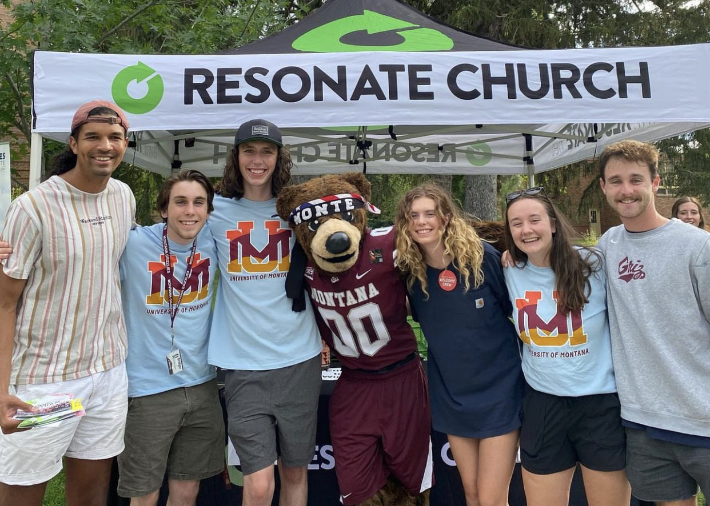

Experience
A look into some of the places where I have
been fortunate enough to exercise my skills
within my academic interests, professionally
and recreationally.

A look into some of the places where I have
been fortunate enough to exercise my skills
within my academic interests, professionally
and recreationally.

Since February of 2022, I have been employed by Dr. Jesse Johnson, Chair of the Computer Science Department at UM, as a research assistant at his glaciology lab. During my first semester, I was responsible for researching the functionality and value of surrogate modelling as a viable method for large-scale ice-sheet models. I experimented with a LSTM neural network in order to generate a surrogate model for the chaotic double-pendulum system. This current semester, I am working with variational autoencoders as the subject of my research.

The rich historical and contemporary theological insights are often contained exclusively within the ivory tower of Biblical academia. In parsing through this content myself, I wanted to provide a means by which this content may be dilluted and given to the everyday person with a hunger for theology. This was the inspiration for founding Coram Cruce Ministries. Since its creation in early 2022, I have developed many means, both face to face and online, which I could spread deeper theological content to the layman. These efforts include numerous Bible studies with students at my university, a weekly lecture session called The Burning at Emmaus, a weekly email group called Fools for Christ, a blog where I can interact with professionals in the field, and various social media accounts. Three books are also currently in the works.
Ministry is an integral part of my life and my long-term professional goals. Much of my deeper experience comes from my role(s) at Resonate Church. Resonate is a collegiate ministry network dedicated to reaching college students and young adults. In addition to serving the church on Sundays as an Owner and member of the leadership team (I am currently serving in sound), I also am a leader in a Village Family, a group responsible for organizing weekly gatherings of students in order to make friendships, have dinner, and talk about things that truly matter.
Phone: (406) 471-4153
Personal Email: bohdi.hollman@gmail.com
Business Email: coram.cruce.theology@gmail.com